Task Progress Restriction Setting
If user select Restrict Task Progress Before All Checklist Activity Completion option from project setting, there will be one checkbox will visible into Task Stages. If That checkbox is selected for perticular taskt stage then user can not change task to taht stage until all checklist activities are either completed or cancelled.
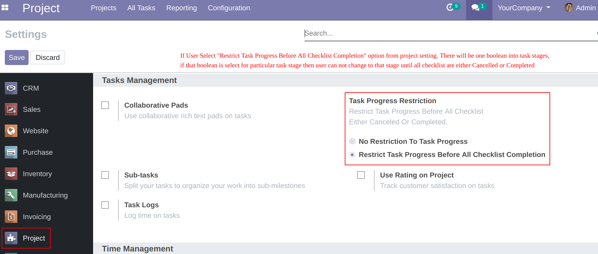
If user select Restrict Task Progress Before All Checklist Activity Completion option from project setting, there will be one checkbox will visible into Task Stages. If That checkbox is selected for perticular taskt stage then user can not change task to taht stage until all checklist activities are either completed or cancelled.
Suppose user set Checklist Task Progress Restriction checkbox for stage Done then task will not goto Done stage until all checklist activities are
either calcelled or completed. This setting can be applied to any task stage.
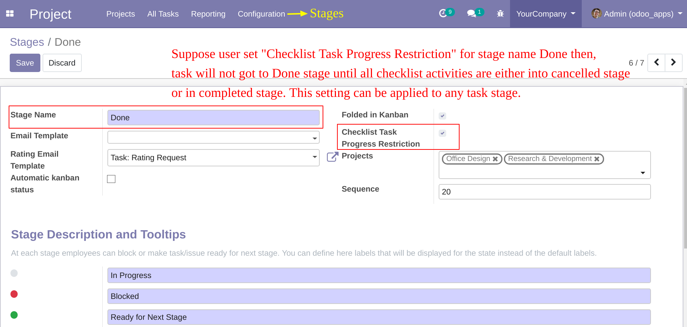
Checklist Activity Stages
Default activity stages are 1.TODO 2.Completed 3.Canceled.
You can create upto 20 more custom stages with sequence in between 2 to 21
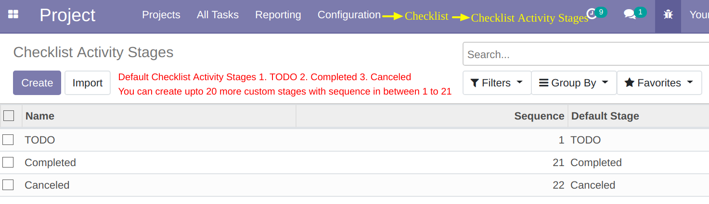
Default activity stages are 1.TODO 2.Completed 3.Canceled.
You can create upto 20 more custom stages with sequence in between 2 to 21
Checklist Master
You need to Add checklist name, description, list activities for that checklist and project. If project is set then this checklist will only available to selected project tasks.
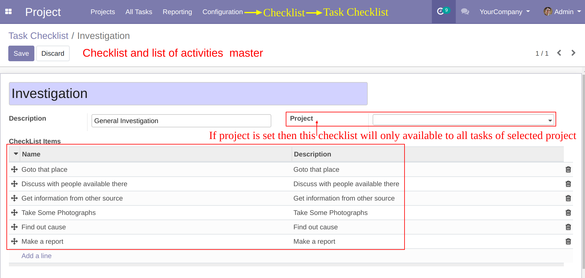
You need to Add checklist name, description, list activities for that checklist and project. If project is set then this checklist will only available to selected project tasks.
Need to select checklist to task. New Checklist page will visible. All checklist activities will auto populate. Different colours for different activity stages. You can see overall checklist progress.
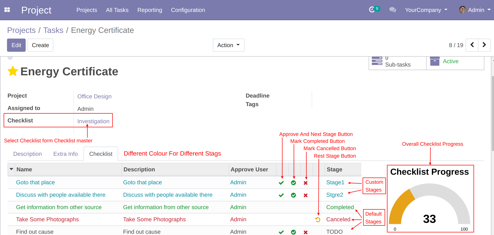
Checklist activity form view.
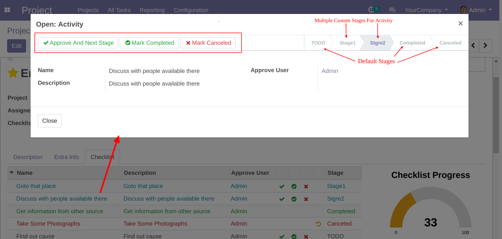
Checklist progress in task kanban view.
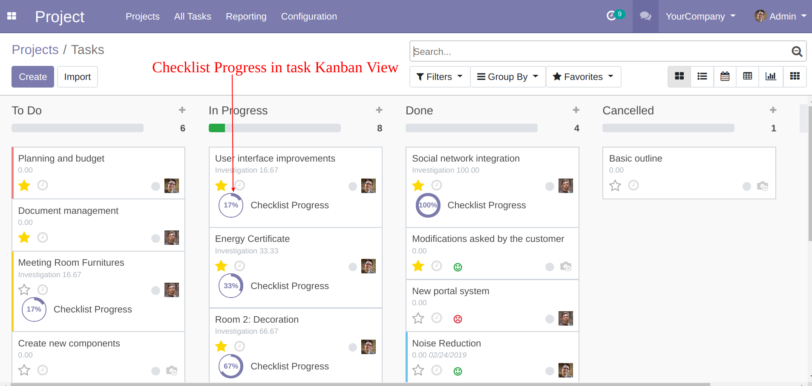
Checklist progress in task list view.
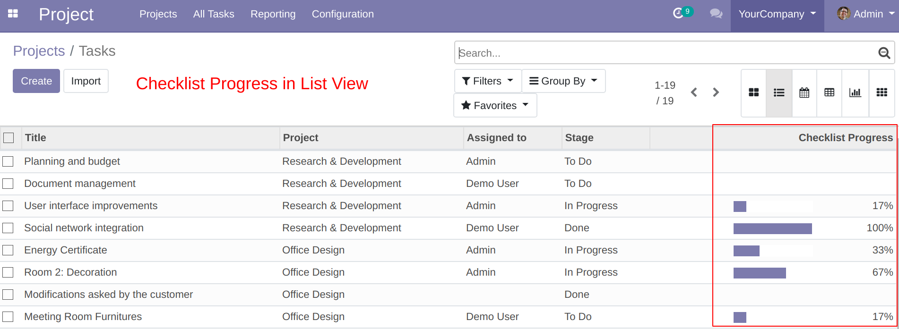
Checklist activity count in project kanban view.
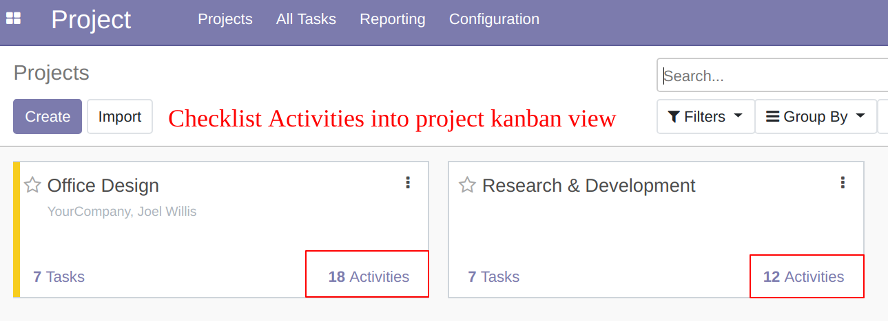
List of cativity count in project form view.
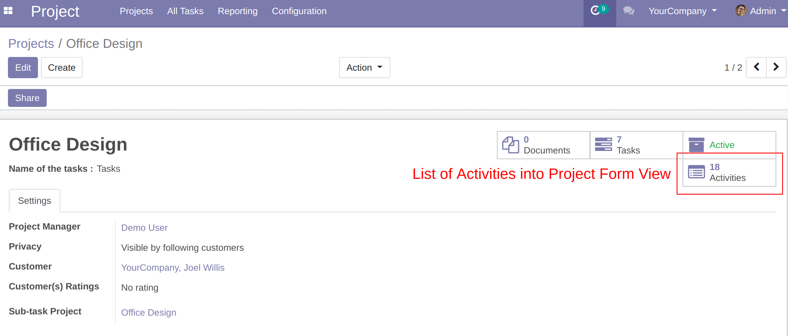
If user try to change stage to Done(Restricted) stage and some activities are not canclled or completed then system will raise warning message.
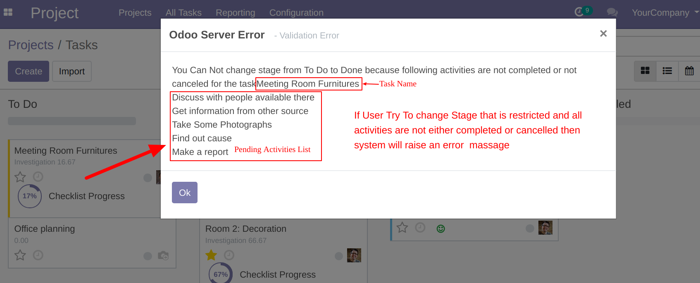
Create separate Checklist activity menu for bulk operation of cancel or complete
Added different filters and groups so user can easily work on specific activities.
Added different filters and groups so user can easily work on specific activities.

Mass Approve / Cancel Activities
Select single or multiple activities from list view --> Action --> Complete / Cancel Activity.
If user click on skip checkbox system will skip cancelled and completed activity otherwise system will perform calcellation or completion operation on all selected records.
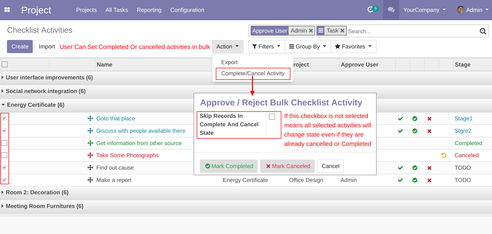
Select single or multiple activities from list view --> Action --> Complete / Cancel Activity.
If user click on skip checkbox system will skip cancelled and completed activity otherwise system will perform calcellation or completion operation on all selected records.